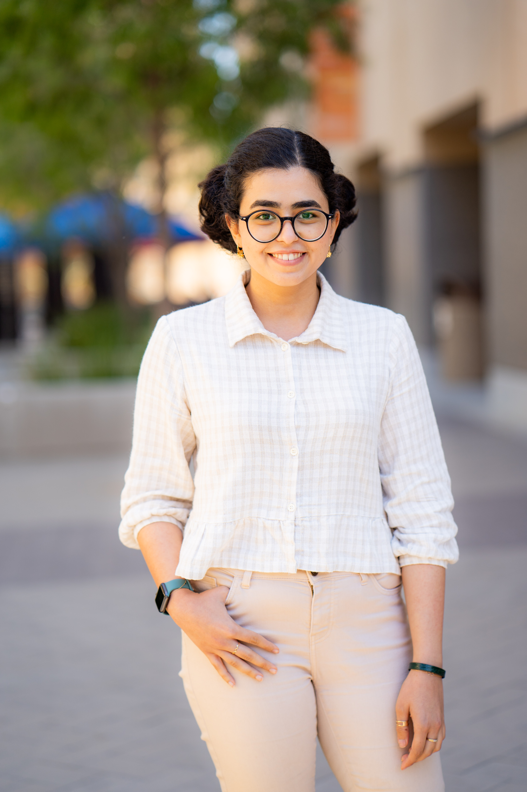

University of California, Irvine
PhD — Operations, Decisions, and Technology Management
University Fellowship 2023–2028 · Graduate Dean's Recruitment Fellowship
2023 – Present

PhD Researcher · UC Irvine
PhD student in Operations Management working on optimization and decision-making in complex systems.
I am a PhD student in Operations, Decisions, and Technology Management at the University of California, Irvine. My research focuses on networked decision-making, online optimization, and strategic interactions in operational systems. I develop algorithmic and economic models for dynamic resource allocation under uncertainty, with an emphasis on systems where decisions are interdependent across agents and shaped by network effects, in both algorithmic and economic environments.
Studies online ad allocation in social networks where impression value depends on
time-sensitive complementarities across connected users. Develops a network-aware
extension of dual mirror descent that incorporates potential future coordination
value, enabling near-optimal allocation under budget constraints.
Analyzes farmland abandonment in agricultural markets with network-dependent cost
spillovers, where farms’ operating costs depend on neighboring participation.
Develops an equilibrium model to study how penalty-based and subsidy-based policies
affect market participation, welfare, and the emergence of exit cascades.
Research Interests
Research
Learning to Monetize Influence: Online Ad Allocation with Edge-Aware Dual Mirror Descent
Regulating Farmland Abandonment under Network Cost Spillovers
Education
University of California, Irvine
PhD — Operations, Decisions, and Technology Management
University Fellowship 2023–2028 · Graduate Dean's Recruitment Fellowship
2023 – Present
Sharif University of Technology
B.Sc. — Industrial Engineering
Thesis: Optimal Referral Marketing with Simulation-Optimization
2017 – 2022